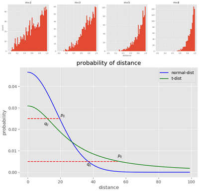

Python 绘图 常见图形
目录
要点: matplotlib.pyplot, seaborn 画图。
import numpy as np import pandas as pd import matplotlib.pyplot as plt import seaborn as sns
柱状图、线图(plt.plot, ax.hist, plt.text)
涉及到图片的大小控制，线的形状、颜色，图的保存等;
# coding:utf-8
import numpy as np
from numpy.linalg import norm
from matplotlib import pyplot as plt
plt.style.use('ggplot')
def sne_crowding():
npoints = 1000 # 抽取1000个m维球内均匀分布的点
plt.figure(figsize=(20, 5))
for i, m in enumerate((2, 3, 5, 8)):
# 这里模拟m维球中的均匀分布用到了拒绝采样，
# 即先生成m维立方中的均匀分布，再剔除m维球外部的点
accepts = []
while len(accepts) < 1000:
points = np.random.rand(500, m)
accepts.extend([d for d in norm(points, axis=1)
if d <= 1.0]) # 拒绝采样
accepts = accepts[:npoints]
ax = plt.subplot(1, 4, i+1)
if i == 0:
ax.set_ylabel('count')
if i == 2:
ax.set_xlabel('distance')
ax.hist(accepts, bins=np.linspace(0., 1., 50))
ax.set_title('m=%s' %m)
plt.savefig("sne_crowding.png")
def sne_norm_t_dist_cost():
x = np.linspace(0, 4, 100)
ta = 1 / (1 + np.square(x))
tb = np.sum(ta) - 1
qa = np.exp(-np.square(x))
qb = np.sum(qa) - 1
#
plt.figure(figsize=(8, 5))
plt.plot(qa/qb, c="b", label="normal-dist")
plt.plot(ta/tb, c="g", label="t-dist")
plt.plot((0, 20), (0.025, 0.025), 'r--')
plt.text(10, 0.022, r'$q_{ij}$')
plt.text(20, 0.026, r'$p_{ij}$')
plt.plot((0, 55), (0.005, 0.005), 'r--')
plt.text(36, 0.003, r'$q_{ij}$')
plt.text(55, 0.007, r'$p_{ij}$')
plt.title("probability of distance")
plt.xlabel("distance")
plt.ylabel("probability")
plt.legend()
plt.savefig("sne_norm_t_dist_cost.png")
if __name__ == '__main__':
sne_crowding()
sne_norm_t_dist_cost()
print('==end==')